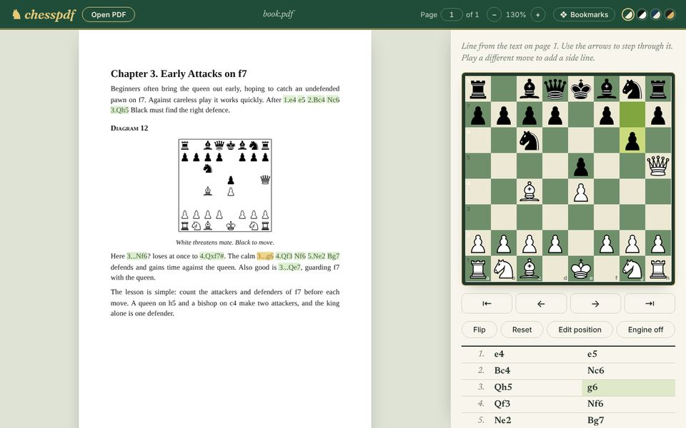

Chess PDF: reading chess books with a board beside the page

The problem
Most chess books I want to read are PDFs. Reading one on a screen usually means a second window with an analysis board, setting up every diagram square by square, and typing in each move from the text to see what the author means. By the time the position is on the board, I have lost the thread of the chapter.
Chess PDF puts the board next to the page. Open a book, click a diagram, and its position appears on a playable board. Click a move in the text, and the board jumps to that point in the line.
Reading a diagram
A diagram is a picture, so the first job is finding the 8 by 8 grid inside it and naming what sits on each square. A small neural network does that in the browser, with no API behind it. It was trained on squares drawn in the style of printed books and scans, using open-source piece sets, plus diagrams cut from real books.
Scanned books were the hard part. To get more training data from them, I let the previous model label a scanned book and kept only the diagrams where the whole position was legal chess and the model was confident. Two rounds of that took one scanned book from about 79% to 99.7% of diagrams reading as legal positions. When a diagram still comes out wrong, you can fix it with Edit position, and the book remembers the fix.
Tying moves to positions
Highlighting the moves in the text is the easy half. The harder half is knowing which position a move belongs to. A move like Nf6 could continue the line you are following, start from the nearest diagram, or come from the starting position. Chess PDF tries each of those and keeps the one from which the following moves stay legal the longest.
Clicking a move also brings in the book's own alternatives printed near it as side lines, so the move list works as a tree, like the analysis board on Lichess.
Scanned books and old notation
A scanned page has no text to read, so the words are read with Tesseract, an open-source text reader that also runs in the browser and only loads when a scanned page is opened. Text readers misread chess moves often ("cb" for "c6"), so a misread is matched to the closest legal move, and the moves after it settle look-alikes like c4 and e4. A move that cannot be placed with confidence is left out rather than shown in the wrong position.
Older books use descriptive notation (P-Q4, Kt-KB3, BxP). For those, every legal move is written out the ways it could be printed, and the word on the page is matched against that list.
Everything else
- Puzzles: press Solve it under a diagram, and the book's own line becomes the answer. Where the book prints no line, Stockfish judges your move.
- Stockfish runs in the browser for analysis.
- Export the line as PGN, open it on the Lichess analysis board, or add it to a Lichess study.
- The browser remembers each book: the page, the board, your notes and your corrections.
Built with
| Part | Tools |
|---|---|
| App | React, TypeScript, Vite |
| Pages and board | PDF.js, chessground, chess.js |
| Diagram model | PyTorch for training, exported to run in the browser |
| Text on scans | Tesseract |
| Engine | Stockfish |
| Hosting | Cloudflare Workers |
What is next
Two things still trip it up: solutions printed far from their diagrams, and diagrams printed from Black's side. Both are on the list.